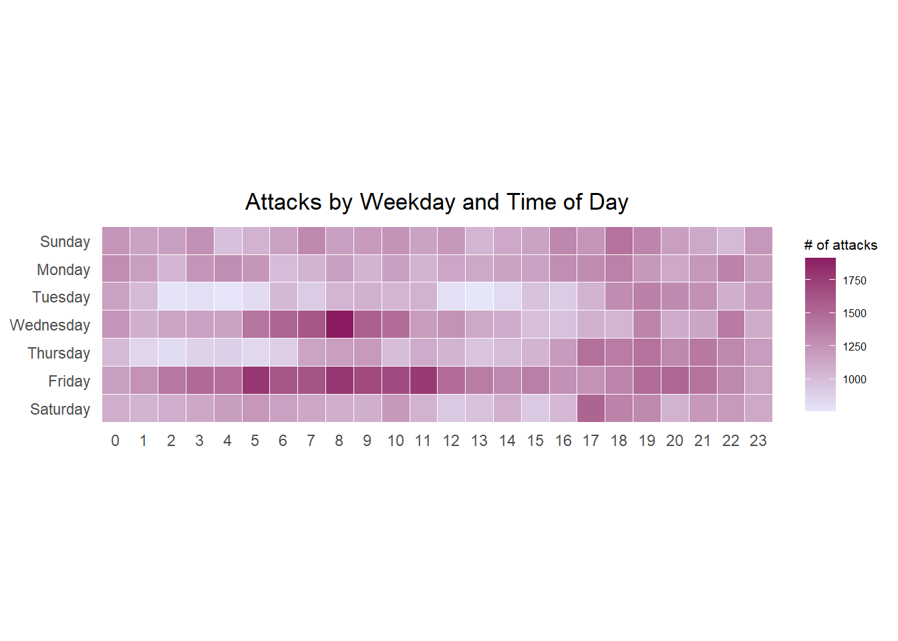
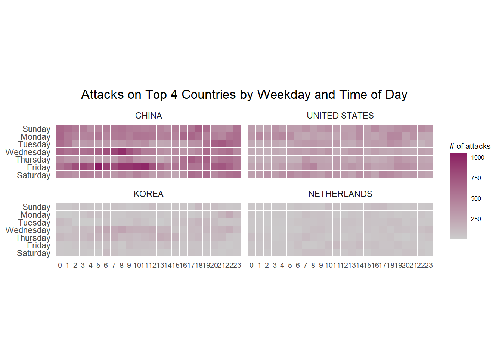
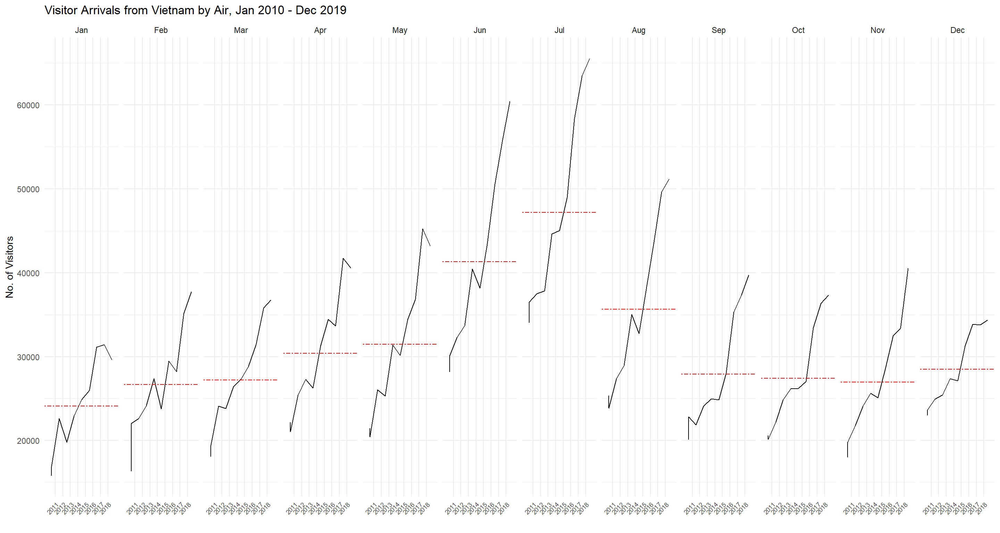

Show the code
pacman::p_load(tidyverse, scales, viridis, lubridate, ggthemes, gridExtra, readxl,knitr, data.table, CGPfunctions, ggHoriPlot)Goh Si Hui
February 20, 2024
February 22, 2024
In this exercise, we will be learning how to create the following visualisations:
a calendar heatmap using ggplot2 functions
a cycle plot using ggplot2 function
a slopegraph
For this exercise, other than tidyverse, we will use the following packages:
scales
viridis
lubridate
ggthemes
gridExtra
readxl
knitr
data.table
In this section, we will learn how to plot a calender heatmap programmatically using ggplot2 package.
For the purpose of this hands-on exercise, eventlog.csv file will be used. This data file consists of 199,999 rows of time-series cyber attack records by country.
First, we will use the code chunk below to import eventlog.csv file into R environment and called the data frame as attacks.
We will use kable() to review the structure of the imported data frame.
| timestamp | source_country | tz |
|---|---|---|
| 2015-03-12 15:59:16 | CN | Asia/Shanghai |
| 2015-03-12 16:00:48 | FR | Europe/Paris |
| 2015-03-12 16:02:26 | CN | Asia/Shanghai |
| 2015-03-12 16:02:38 | US | America/Chicago |
| 2015-03-12 16:03:22 | CN | Asia/Shanghai |
| 2015-03-12 16:03:45 | CN | Asia/Shanghai |
From the above output, we see there there are three columns in the attack dataset: timestamp, source_country and tz.
Before we can plot the calendar heatmap, we need to derive two new fields: wkday and hour using a function. To get the hour function, we will make use of hour() from lubridate package. To get the wkday field, we will make use of weekdays(), which is a base R function.
ymd_hms() and hour() are from lubridate package.
weekdays() is a base R function.
hour() and wday() are from lubridate package.
We will now derive the attacks tibble data frame using the following code chunk.
After creating the function in earlier section, we will now use it to derive the wkday and hour columns. After that we will also use mutate() to convert wkday and hour fields into factor so that they will be ordered when plotting.
Using the attacks1 dataframe from previous section’s method 2, we will just select the columns that we want and convert the wkday and hr columns into factors using as.factor().
grouped <- attacks2 %>%
count(wkday, hour) %>%
ungroup %>%
na.omit()
ggplot(grouped,
aes(hour,
wkday,
fill = n)) +
geom_tile(color = "white",
size = 0.1) +
theme_tufte(base_family = "sans serif") +
coord_equal() +
scale_fill_gradient(name = "# of attacks",
low = "lavender",
high = "maroon4") +
labs(x = NULL,
y = NULL,
title = "Attacks by Weekday and Time of Day") +
theme(axis.ticks = element_blank(),
plot.title = element_text(hjust = 0.5),
legend.title = element_text(size = 8),
legend.text = element_text(size = 6) )
grouped is derived by aggregating the attack by wkday and hour fieldsn is derived by using group_by() and count() functions.na.omit() is used to exclude missing value.geom_tile() is used to plot tiles(grids) at each x and y positions. color and size arguments are used to specify the border color and line size of the tiles. In this case, the border color is white and the line size is 0.1.theme_tufte() of ggthemes package is used to remove unnecessary chart junk.coord_equal() is used to ensure the plot will have an aspect ratio of 1:1scale_fill_gradient() function is used to create a two color gradient (low-high)We can also plot multiple calendar heatmaps for the top four countries with the highest number of attacks.
First we need to identify the top 4 countries with the highest number of attacks: - count the number of attacks by country - calculate the percent of attacks by country, and - save the results in a tibble data frame
Now we will extract the attack records of the top 4 countries from attacks2data frame. Then save the data in a new tibble data frame (i.e. top4_attacks).
Now, we are ready to plot multiple calendar heatmap!
# New facet label names
cty.labs <- c("CHINA", "UNITED STATES", "KOREA", "NETHERLANDS")
names(cty.labs) <- c("CN", "US", "KR", "NL")
#baseplot
ggplot(top4_attacks,
aes(hour,
wkday,
fill = n)) +
geom_tile(color = "white",
size = 0.1) +
theme_tufte(base_family = "sans serif") +
coord_equal() +
scale_fill_gradient(name = "# of attacks",
low = "grey80",
high = "maroon4") +
#plot for each country using facet_wrap
facet_wrap(~source_country, ncol = 2,
labeller = labeller(source_country = cty.labs)) +
labs(x = NULL, y = NULL,
title = "Attacks on Top 4 Countries by Weekday and Time of Day") +
theme(axis.ticks = element_blank(),
axis.text.x = element_text(size = 7),
plot.title = element_text(hjust = 0.5),
legend.title = element_text(size = 8),
legend.text = element_text(size = 6))
In this section, we will learn how to plot a cycle plot showing the time-series patterns and trend of visitor arrivals from Vietnam programmatically using ggplot2 functions.
A Cycle Plot is used when we want to visualize how a trend, or a cycle correlated with the day-of-the-week or the month-of-the-year evolved. A Cycle Plot is made to capture visually how certain values have advanced over a period. This type of chart is especially useful for identifying certain intervals or periods in which the best results are recorded.
For the purpose of this hands-on exercise, arrivals_by_air.xlsx will be used. This data file consists of 199,999 rows of time-series cyber attack records by country.
First, we will use the code chunk below to import arrivals_by_air.xlsx file into R environment and call the tibble data frame as air.
| Month-Year | Republic of South Africa | Canada | USA | Bangladesh | Brunei | China | Hong Kong SAR (China) | India | Indonesia | Japan | South Korea | Kuwait | Malaysia | Myanmar | Pakistan | Philippines | Saudi Arabia | Sri Lanka | Taiwan | Thailand | United Arab Emirates | Vietnam | Belgium & Luxembourg | CIS | Finland | France | Germany | Ireland | Italy | Netherlands | Spain | Switzerland | United Kingdom | Australia | New Zealand |
|---|---|---|---|---|---|---|---|---|---|---|---|---|---|---|---|---|---|---|---|---|---|---|---|---|---|---|---|---|---|---|---|---|---|---|---|
| 2000-01-01 | 3291 | 5545 | 25906 | 2883 | 3749 | 33895 | 13692 | 19235 | 65151 | 59288 | 21457 | 507 | 27472 | 1177 | 2150 | 8404 | 1312 | 3922 | 15766 | 12048 | 1318 | 1527 | 1434 | 2703 | 1634 | 4752 | 12739 | 1292 | 3544 | 4962 | 925 | 3731 | 28986 | 34616 | 5034 |
| 2000-02-01 | 2357 | 6120 | 28262 | 2469 | 3236 | 34344 | 19870 | 18975 | 37105 | 58188 | 19634 | 199 | 29084 | 1161 | 2496 | 9128 | 623 | 3988 | 24861 | 12745 | 899 | 2269 | 1596 | 1182 | 1297 | 6391 | 13093 | 1200 | 2897 | 5054 | 747 | 3980 | 35148 | 26030 | 3938 |
| 2000-03-01 | 4036 | 6255 | 30439 | 2904 | 3342 | 27053 | 17086 | 21049 | 44205 | 74426 | 20719 | 386 | 30504 | 1355 | 2429 | 11691 | 1578 | 4259 | 18767 | 16971 | 1474 | 2034 | 1548 | 1088 | 1220 | 5528 | 13645 | 1368 | 2717 | 4950 | 935 | 3576 | 36117 | 31119 | 4668 |
| 2000-04-01 | 4241 | 4521 | 25378 | 2843 | 5117 | 30464 | 22346 | 26160 | 45480 | 49985 | 17489 | 221 | 34478 | 1593 | 2711 | 14141 | 705 | 6579 | 22735 | 20397 | 1284 | 2420 | 1592 | 1012 | 1208 | 5544 | 13366 | 1345 | 2512 | 4149 | 941 | 3850 | 33792 | 34824 | 6890 |
| 2000-05-01 | 2841 | 3914 | 26163 | 2793 | 4152 | 30775 | 16357 | 35869 | 38350 | 48937 | 19398 | 164 | 34795 | 1397 | 2594 | 13305 | 679 | 4625 | 18399 | 15769 | 1042 | 1833 | 1167 | 660 | 743 | 4225 | 10878 | 1067 | 2205 | 3643 | 764 | 3025 | 23377 | 33139 | 7006 |
| 2000-06-01 | 2776 | 3487 | 28179 | 3146 | 5018 | 26720 | 18133 | 31314 | 47982 | 53798 | 17522 | 440 | 34660 | 1715 | 2924 | 10555 | 2749 | 4740 | 21042 | 17217 | 1545 | 2480 | 1170 | 712 | 982 | 4047 | 9054 | 1363 | 2196 | 3544 | 855 | 2580 | 21769 | 35731 | 7634 |
We will now derive two new fields month and year from the Month-Year field.
| Month-Year | Republic of South Africa | Canada | USA | Bangladesh | Brunei | China | Hong Kong SAR (China) | India | Indonesia | Japan | South Korea | Kuwait | Malaysia | Myanmar | Pakistan | Philippines | Saudi Arabia | Sri Lanka | Taiwan | Thailand | United Arab Emirates | Vietnam | Belgium & Luxembourg | CIS | Finland | France | Germany | Ireland | Italy | Netherlands | Spain | Switzerland | United Kingdom | Australia | New Zealand | month | year |
|---|---|---|---|---|---|---|---|---|---|---|---|---|---|---|---|---|---|---|---|---|---|---|---|---|---|---|---|---|---|---|---|---|---|---|---|---|---|
| 2000-01-01 | 3291 | 5545 | 25906 | 2883 | 3749 | 33895 | 13692 | 19235 | 65151 | 59288 | 21457 | 507 | 27472 | 1177 | 2150 | 8404 | 1312 | 3922 | 15766 | 12048 | 1318 | 1527 | 1434 | 2703 | 1634 | 4752 | 12739 | 1292 | 3544 | 4962 | 925 | 3731 | 28986 | 34616 | 5034 | Jan | 2000 |
| 2000-02-01 | 2357 | 6120 | 28262 | 2469 | 3236 | 34344 | 19870 | 18975 | 37105 | 58188 | 19634 | 199 | 29084 | 1161 | 2496 | 9128 | 623 | 3988 | 24861 | 12745 | 899 | 2269 | 1596 | 1182 | 1297 | 6391 | 13093 | 1200 | 2897 | 5054 | 747 | 3980 | 35148 | 26030 | 3938 | Feb | 2000 |
| 2000-03-01 | 4036 | 6255 | 30439 | 2904 | 3342 | 27053 | 17086 | 21049 | 44205 | 74426 | 20719 | 386 | 30504 | 1355 | 2429 | 11691 | 1578 | 4259 | 18767 | 16971 | 1474 | 2034 | 1548 | 1088 | 1220 | 5528 | 13645 | 1368 | 2717 | 4950 | 935 | 3576 | 36117 | 31119 | 4668 | Mar | 2000 |
| 2000-04-01 | 4241 | 4521 | 25378 | 2843 | 5117 | 30464 | 22346 | 26160 | 45480 | 49985 | 17489 | 221 | 34478 | 1593 | 2711 | 14141 | 705 | 6579 | 22735 | 20397 | 1284 | 2420 | 1592 | 1012 | 1208 | 5544 | 13366 | 1345 | 2512 | 4149 | 941 | 3850 | 33792 | 34824 | 6890 | Apr | 2000 |
| 2000-05-01 | 2841 | 3914 | 26163 | 2793 | 4152 | 30775 | 16357 | 35869 | 38350 | 48937 | 19398 | 164 | 34795 | 1397 | 2594 | 13305 | 679 | 4625 | 18399 | 15769 | 1042 | 1833 | 1167 | 660 | 743 | 4225 | 10878 | 1067 | 2205 | 3643 | 764 | 3025 | 23377 | 33139 | 7006 | May | 2000 |
| 2000-06-01 | 2776 | 3487 | 28179 | 3146 | 5018 | 26720 | 18133 | 31314 | 47982 | 53798 | 17522 | 440 | 34660 | 1715 | 2924 | 10555 | 2749 | 4740 | 21042 | 17217 | 1545 | 2480 | 1170 | 712 | 982 | 4047 | 9054 | 1363 | 2196 | 3544 | 855 | 2580 | 21769 | 35731 | 7634 | Jun | 2000 |
Next, we will extract the data for the target country (i.e. Vietnam) and data beyond year 2010 using the following code chunk.
Now we will use group_by() and summarise() of dplyr to compute average arrivals by month across all years.
ggplot() +
geom_line(data = viet,
aes(x = year,
y = `Vietnam`,
group = month),
color = "black") +
geom_hline(aes(yintercept =avgvalue),
data = hline.data,
linetype = 6,
color = "red",
size = 0.5) +
facet_grid(~month) +
labs(axis.text.x = element_blank(),
title = "Visitor Arrivals from Vietnam by Air, Jan 2010 - Dec 2019") +
xlab("") +
ylab("No. of Visitors") +
theme_tufte(base_family = "sans serif")